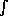

(反復を含む)再帰は、Scheme の数学プリミティブ手続きを上手く組み合せて さまさまな数値計算のテクニックを実装できます。たとえば、 シンプソン法を実装してみましょう。実装するのは定積分の近似値を見つける 手続きです。
関数 f(x) の区間 [a,b] における定積分 は、下限 x = a から上限 x = b までの区間の f(x) であらわされる 曲線の下の面積 とみなすことができます。いいかえれば、 f(x) の x,y-平面上の曲線のグラフを考えて、この曲線と、 x-軸と、縦座標 x = a と、x = b とに囲まれた部分の 面積を求めます。
シンプソン法にしたがって、積分区間 [a,b] を n 個の等間隔の 区間に分割します。ここでは、n は偶数です。(n が大きいほど 良い近似が得られます。) 区間境界は x-軸上に n + 1 個の点を構成する。これを x0, x1, ..., xi, xi+1, ..., xn とします。 ここで、x0 = a かつ xn = b です。 各区間の長さは h = (b - a)/n なので、xi = a + ih となります。 区間境界上の f(x) の高さ、すなわち、y0, ..., yi, ..., yn です。ここで yi = f(xi) = f(a + ih) です。 シンプソン法は a と b との間の f(x) の定積分を以下の値で近似します。 1
4 つの引数、被積分関数手 f、x の値の上限下限 a と b、
区間の数 n を引数としてとる手続き integrate-simpson を定義します。
(define integrate-simpson (lambda (f a b n) ;...
integrate-simpson の本体部で最初にすることは、
n が偶数かどうかのチェックです。— もし偶数でなければ、その値を
1 増します。
;... (unless (even? n) (set! n (+ n 1))) ;...
つぎに、ローカル変数 h に区間の長さを入れます。さらに 2つの
ローカル変数 h*2 と n/2 を導入して h の 2倍の値と
半分の値をそれぞれ格納します。これは、あとの計算で頻繁にこれらの
値を使うことが予想されているからです。
;... (let* ((h (/ (- b a) n)) (h*2 (* h 2)) (n/2 (/ n 2)) ;...
和 y1 + y3 + ··· + yn-1 と y2 + y4 + ··· + yn-2
はともに別の高さの加算を含んでいることに注意します。ローカル手続き
sum-every-other-ordinate-starting-from を定義してこの共通の
反復を捕捉します。この反復をひとつの手続きに抽象化することで、
コードの字面での繰り返しを回避します。これは乱雑さを軽減するだけではなく、
誤りの機会も減らします。反復の出現が一箇所なので、デバッグする場所も
一箇所になるからです。
sum-every-other-ordinate-starting-from は 2 つの引数を取ります。
開始の高さと総和をとる高さの数です。
;... (sum-every-other-ordinate-starting-from (lambda (x0 num-ordinates) (let loop ((x x0) (i 0) (r 0)) (if (>= i num-ordinates) r (loop (+ x h*2) (+ i 1) (+ r (f x))))))) ;...
3 つの縦高さの和を計算できます。これを組み合せて最終的な 答をつくります。y1 + y3 + ··· + yn-1 と (n/2) - 1 の 中に n/2 という項が、y2 + y4 + ··· + yn-2 と yn-2 の中に (n/2) - 1 の項が含まれていることに注意してください。
;... (y0+yn (+ (f a) (f b))) (y1+y3+...+y.n-1 (sum-every-other-ordinate-starting-from (+ a h) n/2)) (y2+y4+...+y.n-2 (sum-every-other-ordinate-starting-from (+ a h*2) (- n/2 1)))) (* 1/3 h (+ y0+yn (* 4.0 y1+y3+...+y.n-1) (* 2.0 y2+y4+...+y.n-2))))))
では、以下の関数の定積分を integrate-simpson を使って求めて
みましょう。
まず最初に Scheme の前置記法をつかって、 を定義します。 2
(define *pi* (* 4 (atan 1))) (define phi (lambda (x) (* (/ 1 (sqrt (* 2 *pi*))) (exp (- (* 1/2 (* x x)))))))
*pi* を定義するのに tan-1 1 = /4 という事実を
利用していということに注意してください。3
以下はそれぞれ phi の 0 ら 1 あるいは 2 あるいは 3 までの定積分です。
どれもみな 10 個の区間を使っています。
(integrate-simpson phi 0 1 10) (integrate-simpson phi 0 2 10) (integrate-simpson phi 0 3 10)
小数点 4 桁までだとこれらの値はそれぞれ 0.341、0.4772、0.4987 に なります。[cite{hmf}, Table 26.1]、ここでのシンプソン法の実装が たしかにまともな値を出していることをチェックしてみましょう。 4
区間の数 n を指定するのが常に便利というわけではありません。
ある被積分関数について十分に良い数というのが別の関数ではひどく
不適切なものになりえます。このような場合には、許容誤差e
を指定して、最終結果を保証するのにやぶさかではありません。
プログラムにどのくらいの区間が必要かを見積もらせましょう。
これを達成する典型的な方法は、プログラムが徐々に n を
増加させて、だんだん良い応えをになるよう試して、連続して
求められた和の差が e 以内におさまればそこで停止するというものです。
そうすると以下のようになります。
(define integrate-adaptive-simpson-first-try (lambda (f a b e) (let loop ((n 4) (iprev (integrate-simpson f a b 2))) (let ((icurr (integrate-simpson f a b n))) (if (<= (abs (- icurr iprev)) e) icurr (loop (+ n 2)))))))
ここで、(もともとの手続き integrate-simpson を使って)
シンプソン積分を連続して、n = 2, 4, ...について計算します
(n は偶数でなければならないことを思いだしてください)。
現在の n に対する積分 icurr と、直ぐ前の n に対する
積分 iprev との違いが e 以内であれば、icurr を返します。
このアプローチのもつ問題のひとつは、区間の加算によって恩恵を 受けるのが関数の断片一部に過ぎないということを考慮に いれていないことである。他の断片については区間の加算は 全体の答えを良くすることに貢献しないのに単に計算量を増やすだけ になっています。適応を改良するには、積分を隣接した断片に分割して それぞれの断片で別々に改良することができます。
(define integrate-adaptive-simpson-second-try (lambda (f a b e) (let integrate-segment ((a a) (b b) (e e)) (let ((i2 (integrate-simpson f a b 2)) (i4 (integrate-simpson f a b 4))) (if (<= (abs (- i2 i4)) e) i4 (let ((c (/ (+ a b) 2)) (e (/ e 2))) (+ (integrate-segment a c e) (integrate-segment c b e))))))))
最初の断片は a から b までです。一つの断片の
積分を求めるのに、シンプソン積分 i2 と i4 を
2 つのもっとも小さい分割数 2 と 4 で求めます。この 2つの差が
e 以内に収まっていれば、i4 を返します。そうでなければ、
区間を半分に分割します。それぞれの断片の積分を別々に計算して
加えます。一般に、同じレベルの別々の断片はそれぞれのペースで
収束します。半分の断片を統合した時に、許容誤差も半分にするよう
にし、最終的な和の精度が腐らないようにしなければなりません。
この手続きにもいくつか効率の悪い部分がのこっています。
i4 の積分は i2 で既に決定している 3 つの高さについて
再計算をしています。また、それぞれの半分の断片の計算は、i2 と
i4 で既に決定している 3つの高さについて再計算しています。
これらの非効率部分を i2 および i4 のために使う和を
明示的に作り、名前付き-let 内で余分に integrate-segment
というパラメータで受渡すことで回避します。こうすることで
integrate-segment の本体と連続した integrate-segment の
呼び出しの間との両方で共有が進みます。
(define integrate-adaptive-simpson (lambda (f a b e) (let* ((h (/ (- b a) 4)) (mid.a.b (+ a (* 2 h)))) (let integrate-segment ((x0 a) (x2 mid.a.b) (x4 b) (y0 (f a)) (y2 (f mid.a.b)) (y4 (f b)) (h h) (e e)) (let* ((x1 (+ x0 h)) (x3 (+ x2 h)) (y1 (f x1)) (y3 (f x3)) (i2 (* 2/3 h (+ y0 y4 (* 4.0 y2)))) (i4 (* 1/3 h (+ y0 y4 (* 4.0 (+ y1 y3)) (* 2.0 y2))))) (if (<= (abs (- i2 i4)) e) i4 (let ((h (/ h 2)) (e (/ e 2))) (+ (integrate-segment x0 x1 x2 y0 y1 y2 h e) (integrate-segment x2 x3 x4 y2 y3 y4 h e)))))))))
integrate-segment はここでは、明示的に幅 h の 4 つの区間
をセットし、5 つの高さ y0、y1、y2、y3、y4 を
与えます。i4 の積分はこれらの高さをすべて使います。一方、
i2 は y0、y2、y4 だけを使います。このとき
区間の幅は h の 2倍です。i2 と i4 のために
使われる明示的な和がシンプソン和に相当することは容易に確かめられます。
以下の 020 ex dx の近似を比べましょう。
(integrate-simpson exp 0 20 10) (integrate-simpson exp 0 20 20) (integrate-simpson exp 0 20 40) (integrate-adaptive-simpson exp 0 20 .001) (- (exp 20) 1)
最後のものは、解析的に正しい答えです。
(integrate-simpson exp 0 20 n) が
integrate-adaptive-simpson が返すものに匹敵する結果を
返すようなもっとも小さい n (やりすぎは高くつきます) を
見付けられるかどうか見てください。
シンプソン法を直接異常積分(積分される関数の値が積分の区間の どこかで有界ではないか、積分区間そのものが有界ではないような積分) に適用することはできません。しかし、その積分のいち部分については 適用可能です。のこりの部分は別の方法で近似します。たとえば、 関数を考えてみましょう。n > 0で、(n) は以下のような 定義されています。上方無限の積分として定義されています。
これより、以下がいえます。(a) (1) = 1 かつ、(b) n > 0 において、 (n + 1) = n(n) です。このことは、(1, 2) の区間における の値がわかれば、n > 0 の任意の実数について (n) の値を 知ることができるということを示しています。実際、n > 0 という条件を緩め れば、n ≤ 0 の整数について、この関数が発散するという知識を利用して、 (b) の結果を用いて、(n) の定義域を n ≤ 0 を含むように拡張す ることができます。5
まず、引数が区間 (1, 2) になければならないような、Scheme の手続き
gamma-1-to-2 を定義します。gamma-1-to-2 は二つめの引数として、
許容誤差 e を取るものとします。
(define gamma-1-to-2 (lambda (n e) (unless (< 1 n 2) (error 'gamma-1-to-2 "argument outside (1, 2)")) ;...
ローカル変数 gamma-integrand を導入し、
-積分 g(x) = xn-1ex を保持させます。
;... (let ((gamma-integrand (let ((n-1 (- n 1))) (lambda (x) (* (expt x n-1) (exp (- x)))))) ;...
ここで、g(x) を 0 から まで積分する必要があります。 無限個の区間を扱うことができないことは明かです。それゆえ、シンプソン法 を [0, ) の一部だけ、たとえば、[0, xc] (c は「切断 (cut-off)」をあらわす)だけに使用します。残りの部分、「末尾(tail)」 すなわち、区間 [xc, ) については、g(x) を良く近似する 末尾被積分関数 t(x) を利用しますが、解析的な解のほうがより使いやすい ことをしっています。実際、十分に大きい xc については g(x) を 指数的減衰関数 t(x) = yc e-(x - xc ) で置き換えることが可能で あるということを理解するのはやさしいことです。ここで、 yc = g(xc) です。したがって、以下とします。
最初の積分はシンプソン法を用いて解くことができます。
二番目は yc です。xc を求めるのに、低めの値(たとえば 4) から
始め、これを 2 倍することを 2xc の短冊(すなわち、g(2cx))が
末尾被積分関数(つまり、t(2xc))と、ある許容誤差内におさまるまで、
つづけます。シンプソン積分と末尾被積分関数を求めるには、許容誤差
e/100 が必要で、これは与えられた許容誤差 e より二桁小さい
値です。したがって全体の許容誤差は、他に影響を与えません。
;... (e/100 (/ e 100))) (let loop ((xc 4) (yc (gamma-integrand 4))) (let* ((tail-integrand (lambda (x) (* yc (exp (- (- x xc)))))) (x1 (* 2 xc)) (y1 (gamma-integrand x1)) (y1-estimated (tail-integrand x1))) (if (<= (abs (- y1 y1-estimated)) e/100) (+ (integrate-adaptive-simpson gamma-integrand 0 xc e/100) yc) (loop x1 y1)))))))
これで、より一般的な、任意の実数 n に対する (n) を返す
手続き gamma を以下のように書くことができます。
(define gamma (lambda (n e) (cond ((< n 1) (/ (gamma (+ n 1) e) n)) ((= n 1) 1) ((< 1 n 2) (gamma-1-to-2 n e)) (else (let ((n-1 (- n 1))) (* n-1 (gamma n-1 e)))))))
では、(3/2) を計算してみましょう。
(gamma 3/2 .001) (* 1/2 (sqrt *pi*))
二番目のあたいは解析的に正しい答です。
((3/2) = (1/2)(1/2) でかつ (1/2) は
1/2であることが知られています。)
gamma の二つ目の引数(許容誤差)を変更して、近似値を望むだけ
近いものにすることができます。
1 この近似がなぜ妥当かの説明は、微積分に関する初等の教科書にあたって下 さい。
2 は 平均 = 0 標準偏差 = 1 の正規あるいは ガウス分布に従う、ランダム変数の確率密度のことです。 定積分 0z (x) dx は 0 と z の間にランダム変数の が入る確率です。しかし、この例を理解するのにこのことを全部 知っている必要はありません。
3 Scheme が
atan 手続きを持っていなかったら、
01 (1 + x2)-1 dx、つまり /4 の近似値を求めるのに
数値積分手続きを使うことができたでしょう。
4 phi から (/1 (sqrt (* 2 *pi*))) のような定数因子を
積分の外に出すことで integrate-simpson ないの縦高さの計算を
高速化できます。
5 n > 0 の実数に対する (n) はそれ自身、 整数 n > 0 を (n - 1)! に写像する、「1 引いて階乗」する関数の 拡張です。